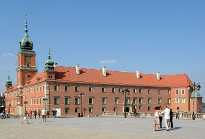

Jest to barokowo-klasycystyczny zamek królewski znajdujący się w Warszawie przy placu Zamkowym 4. Pełni funkcje muzealne i reprezentacyjne. Pierwotnie rezydencja książąt mazowieckich, a od XVI wieku siedziba władz I Rzeczypospolitej: króla i Sejmu (Izby Poselskiej i Senatu). W swojej długiej historii Zamek Królewski był wielokrotnie grabiony i dewastowany przez wojska szwedzkie, brandenburskie, niemieckie i rosyjskie.
W XIX wieku, po upadku powstania listopadowego, przeznaczony na potrzeby administracji rosyjskiej. W okresie I wojny światowej rezydencja niemieckiego generalnego gubernatora. W latach 1920–1922 siedziba Naczelnika Państwa, w latach 1926–1939 rezydencja Prezydenta Rzeczypospolitej Polskiej. Spalony i ograbiony przez Niemców w 1939, niemal doszczętnie zniszczony w 1944.
W 1965 ocalałe fragmenty zamku oraz Bibliotekę Królewską, pałac Pod Blachą i Arkady Kubickiego wpisano do rejestru zabytków. Rekonstrukcją zamku przeprowadzoną w latach 1971–1984 kierował Obywatelski Komitet Odbudowy Zamku Królewskiego w Warszawie. W 1979 w zamku utworzono muzeum, powołując państwową instytucję kultury Zamek Królewski w Warszawie – Pomnik Historii i Kultury Narodowej, od 2014 działającej pod nazwą Zamek Królewski w Warszawie – Muzeum. Rezydencja Królów i Rzeczypospolitej. W 1980 Zamek Królewski wraz ze Starym Miastem został wpisany na listę światowego dziedzictwa UNESCO, w 1994 wraz z historycznym zespołem miasta z Traktem Królewskim i Wilanowem Królewskim został uznany za pomnik historii.